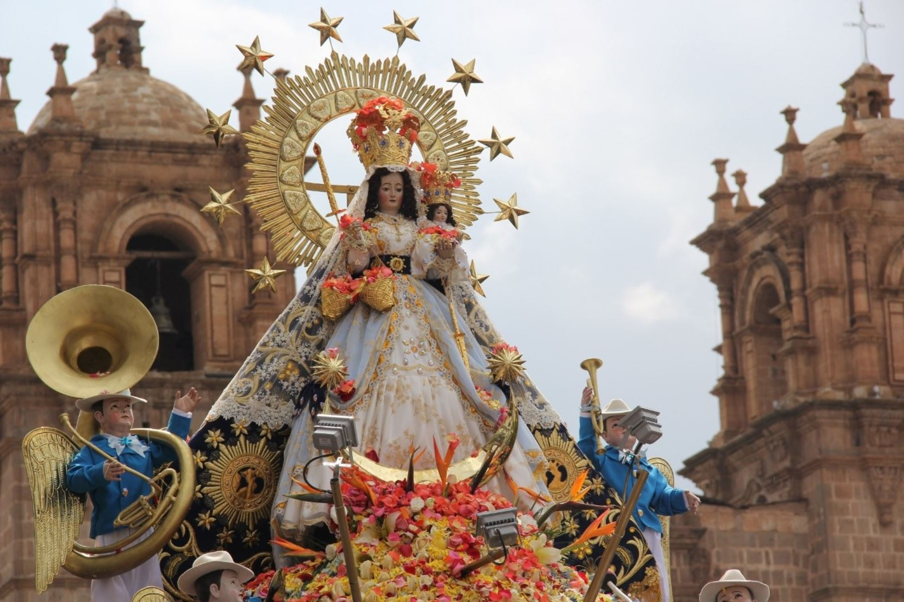
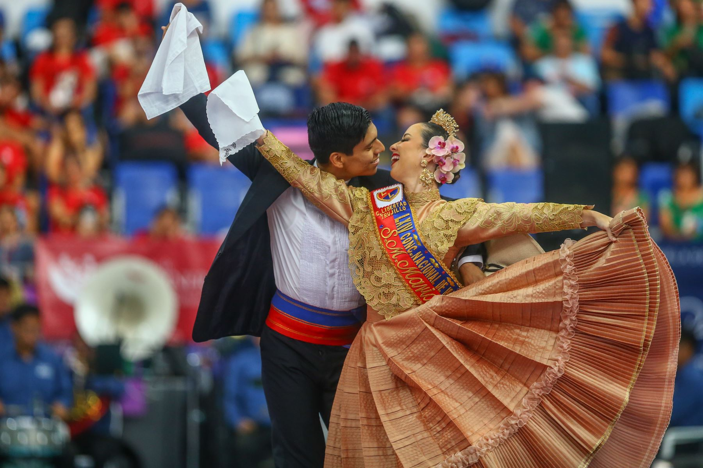

Traditions & Festivals

Inti Raymi
The Festival of the Sun, held in Cusco every June, honors the Incan sun god.

Virgen de la Candelaria
One of the largest festivals in South America, celebrated in Puno with music and dance.

Traditional Dances
Colorful dances like Marinera and Huayno reflect Peru's rich regional diversity.

Día de los Muertos
A time to honor and celebrate the lives of loved ones with food and rituals.